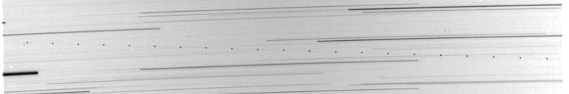
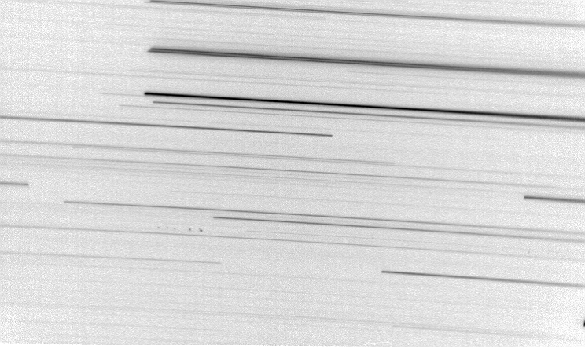
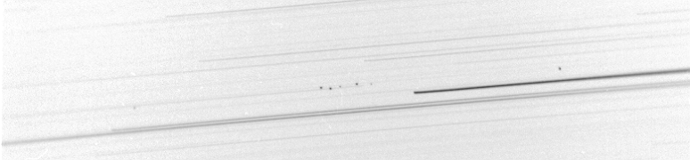
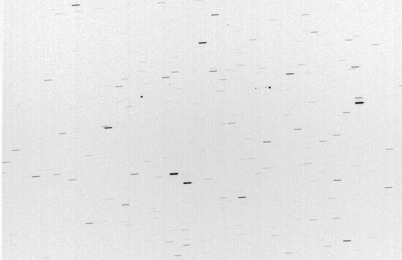
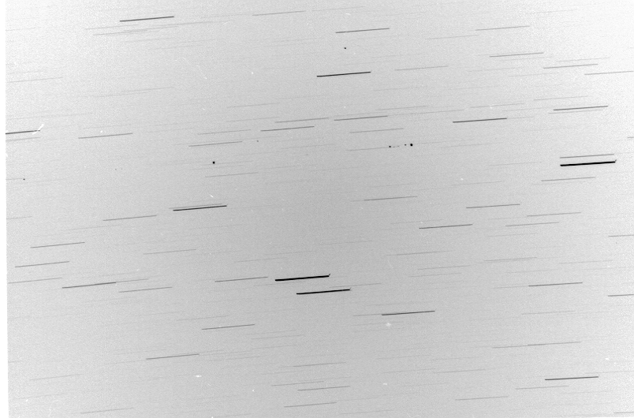
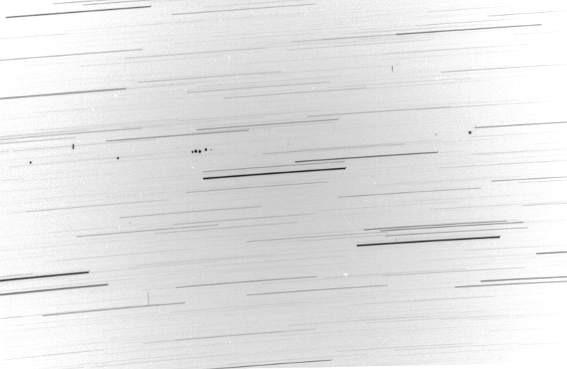
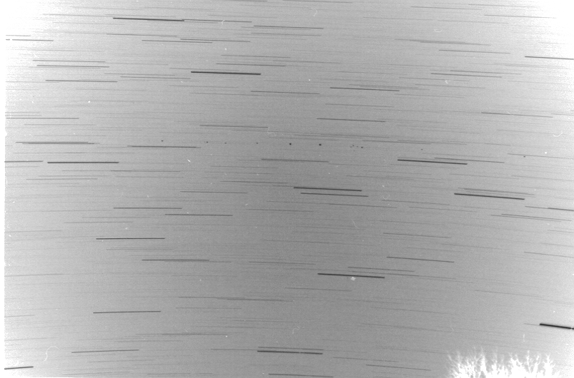
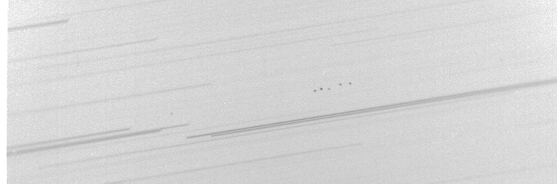
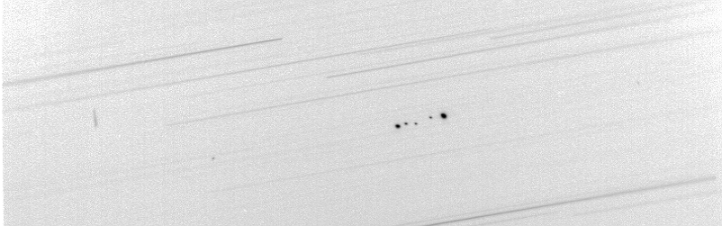

|

Rick Huziak's Geosynchronous Satellite Flares
All photos are Copyright Rick Huziak 2004 and must not be copied or distributed without written permission from me. These are here for your enjoyment only.
About the photos: All were taken in October of various years, during our Geo Flare Season. Place your camera on a sturdy tripod - get some fast film. Open the lens up wide, and shot for minutes or hours. The geo belt for most of Canada is somewhere around -07deg 30 min (from the celestial equator). So point the camera there and shoot for 40 - 60 minutes and see what you pick up.
These photos were destined for a Journal article that I just can't get my act together to write; they still may be used there, so please heed my copyright notice.
Two Murphy photos are shown first, then the good stuff.
Rick

Image 1. An Air Canada jet spoils my geosynch photo. Two geos can be seen bracketing the first jet image at left. 135 mm f2.8, 20 min exp.

Image 2. Tumbling rocket body - Atlas Centaur likely - an expended geosync launch vehicle. Faint geo images are seen along the faint star streak that skirts the top end of the tumbling image. The right star is Rigel. 135 mm f2.8, 1 hr exp

Image 3. Geosync group of 5 Direct Broadcast satellites (all within ¬š degree). Other faint geos are visible to the right. The fuzzy streak near the top is the Orion Nebula. 270 mm f/5/6, 1 hr exp

Image 4. Geosync group of 5 Direct Broadcast satellites (all within ¬š degree). Some satellites are beginning to flare. 270 mm f/5/6, 1 hr exp

Image 5. Point sources are flaring naked eye geos - the brightest are about 4th mag. 135mm f/2.8, 1 min. exposure

Image 6. Point sources are flaring naked eye geos - the brightest are about 4th mag. Same photo as above. Note the geosync near the top of the frame - 2.5 degrees above the geo-belt. Some geos will wobble up to 4 degrees from the plane. 135mm f/2.8, 3 min. exposure

Image 7. Point sources are flaring naked eye geos - the brightest are about 4th mag. The group of 5 are the Direct Broadcast satellites. Note the vertical streak at the top-right and the one entering the plane at the left. These are likely GPS satellite, about ¬š way to the geosync belt. The long vertical streak at the bottom left is likely an Atlas-Centaur launch vehicle. 135mm f/2.8, 12 min. exposure

Image 8. Point sources are flaring naked eye geos - the brightest are about 4th mag. This is a NAKED EYE string of pearls. Was pretty awesome to witness! 50mm f/1.8, 10 min. exposure. The group of 4 satellites to the right of center is not the Direct Broadcast group, but a similar group over Eastern Canada.

Image 9. Same photo as above, but in positive form. Point sources are flaring naked eye geos - the brightest are about 4th mag. This is a NAKED EYE string of pearls. Was pretty awesome to witness! 50mm f/1.8, 10 min. exposure. Astrophotographers who complain about the vignetting in this photo can F. O.

Image 10. "Normal" view of geosyncs on any particular night, at 13 - 14 mag. This is the Direct Broadcast Group of 5. A 6th satellite has been since added. This is just prior to flaring (which lasts 10 or 15 minutes per satellite). 270 mm, f2.8, 1 hour exp.

Image 11. Flared view of geosyncs a little later in the same night, with the brighest satellite about 7th magnitude at the time of the photo. (The entire group reached 4 - 5 mag). This is the Direct Broadcast Group of 5. 270 mm, f2.8, 20 min. exp.